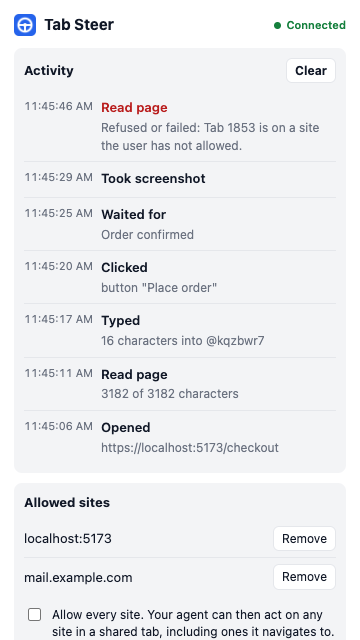

Hand your coding agent a tab, not your browser.
Tab Steer lets Claude Code, Codex, Cursor and other coding agents read and use pages in your real, logged-in Chrome. Only in the tabs you share, on the sites you allow.
You: Test the signup form on localhost:5173. Agent runs: $ tabsteer read # Sign up [input:email "Email" @kqzbwr4] [button "Create account" @kqzbwr9] $ tabsteer type "test@example.com" --into @kqzbwr4 $ tabsteer click @kqzbwr9 Agent: The form submits, but the error message overlaps the button on narrow screens.
Set up in four steps
You need Node.js 18 or newer.
Add the extension
From the Chrome Web Store. Click Turn on on the welcome page.
Install the companion
In a terminal:npm install -g tabsteertabsteer install
Teach your agent
tabsteer install --agent claude (or antigravity). For other agents, add this snippet to your rules.
Share a tab
Click the Tab Steer icon on the page and choose Share this tab with your agent.
Then just ask your agent
The agent reads the page as compact text and acts on exact elements. You watch it happen in the tab.
Test your app
"Open localhost:5173, fill in the signup form and tell me what breaks."
Read what needs your login
"Read the error on the Sentry page I shared and find the cause in this repo."
Reproduce a bug
"Follow the steps in issue #42 in my shared tab and take a screenshot."
You stay in control
An agent in your browser acts as you, so every limit lives in the extension, where the agent can't change it.
- Shared tabs only. The agent works only in the "Tab Steer" tab group.
- Allowed sites only. Sharing a tab allows its site. Remove sites at any time.
- See everything. The Activity panel lists each action live. Typed text is never logged.
- One-click pause. Every command stops until you resume.
- Secrets stay hidden. Password, payment and one-time-code values are never returned.
- Local only. No network listener and no tracking. Privacy policy.
